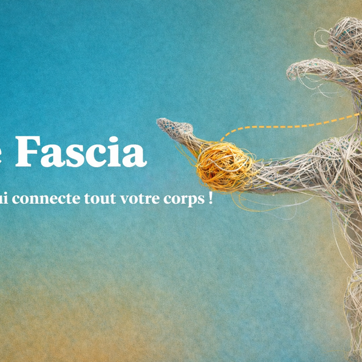
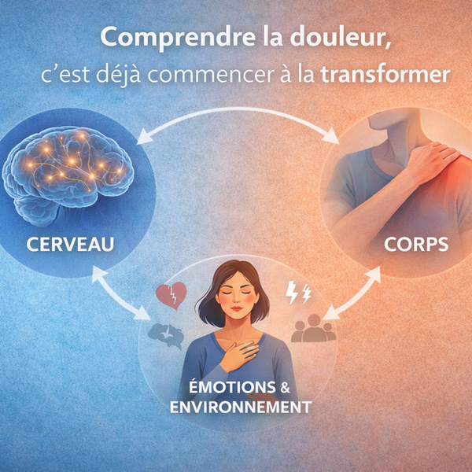
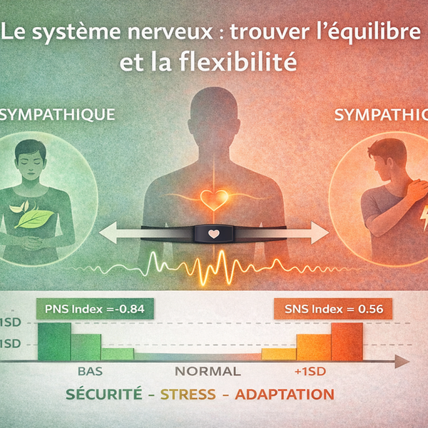

Conseils et informations sur la santé
Restez informé et inspiré

Et si l’origine de nombreuses douleurs ne se trouvait pas là où l’on regarde habituellement ?
Les fascias, au cœur de la compréhension du corps — et de nos traitements.

La douleur n’est pas seulement ce qui se passe dans le corps… mais elle n’est pas non plus seulement dans le cerveau.
Comprendre la douleur pour la transformer : l’approche biopsychosociale.

Se sentir en sécurité : une clé essentielle dans la douleur et la tension.
Système nerveux autonome, variabilité cardiaque et régulation.